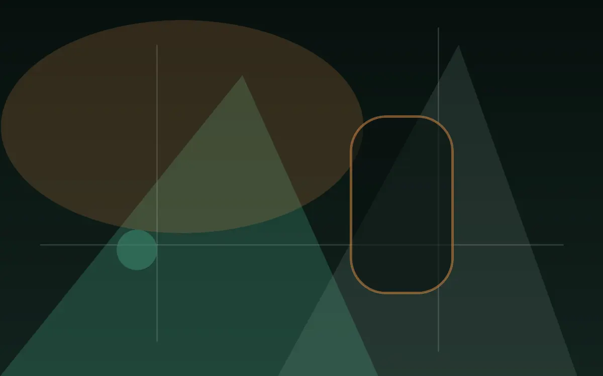

Welcome zone
Identification, orientation and guest assistance.

Physical gaming venue · New Zealand
A sequence of softly lit spaces creates clear transitions between welcome, machines, table areas, dining and quiet reset points.
Physical layout
A sequence of softly lit spaces creates clear transitions between welcome, machines, table areas, dining and quiet reset points.
The website provides orientation only. Entry, equipment and all participation remain on site.
Interactive venue guide
This conceptual wayfinding view explains how a physical venue can be organised. Final operator-approved floor information must replace it before publication.
Entry, identification checks and first-time wayfinding.

Welcome and service sit near the entrance; active gaming areas occupy the centre; dining and reset spaces soften the edges. Accessible circulation connects them.
Identification, orientation and guest assistance.
Physical equipment in clear, supervised zones.
Staff-led table areas with house etiquette.
A natural pause away from the gaming floor.
Step-free circulation and seating points.
Private information about breaks and support.
Responsible gaming
Gaming is entertainment, not a way to earn money. Outcomes are uncertain and spending carries financial risk. Set a budget, take breaks and never chase losses.
Support is available if gambling stops feeling manageable.
Gambling Helpline Aotearoa — 0800 654 655Read our safer visit guide →Review entry, accessibility and responsible gaming information before travelling.
Cookie controls